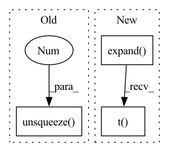

Pattern ID :24747
Before Change
// get a mask for labels[i] == labels[j]
// Shape: (batch_size, batch_size)
labels_equal = labels.unsqueeze(0) == labels.unsqueeze(1 )
// combine masks
mask = torch.logical_and(indices_not_equal, labels_equal)
After Change
torch.Tensor: Anchor-positive mask. Shape: (batch_size_a, batch_size_b)
// Shape: (batch_size_a, batch_size_b)
mask = labels_a.expand(labels_b.shape[0], labels_a.shape[0]).t() == labels_b.expand(
labels_a.shape[0], labels_b.shape[0]
)
In pattern: SUPERPATTERN
Frequency: 3
Non-data size: 3
Instances Fragment ID: 76616709
Project Name: qdrant/quaterion
Commit Name: 83f91232a230d9f14f94557fc0a9bad59c432e81
Time: 2022-08-30
Author: yusufsarigoz@gmail.com
File Name: quaterion/utils/utils.py
M Class Name: AnonimousClass
N Class Name: AnonimousClass
M Method Name: get_anchor_positive_mask(2)
N Method Name: get_anchor_positive_mask(1)
M Parent Class:
N Parent Class:
M File Name: quaterion/utils/utils.py
N File Name: quaterion/utils/utils.py
M Start Line: 122
M End Line: 130
N Start Line: 112
N End Line: 138
Before Change
dist_ap, dist_an = [], []
for i in range(n):
dist_ap.append(dist[i][pos_mask[i]].max().unsqueeze(0 ) )
dist_an.append(dist[i][neg_mask[i]].min().unsqueeze(0))
dist_ap = torch.cat(dist_ap)After Change
// hard examples mining
n, m = f.size(0), xbm_f.size(0)
identity_mat = labels.expand(m, n).t() .eq(xbm_labels.expand(n, m)).float()
dist_ap, dist_an = hard_examples_mining(dist_mat, identity_mat)
// Compute ranking hinge loss Fragment ID: 76616711
Project Name: thuml/transfer-learning-library
Commit Name: 0f8f51c4b2fac78edf87e29764e4da3deec6f65f
Time: 2021-10-14
Author: 57670068+tsingcbx99@users.noreply.github.com
File Name: common/vision/models/reid/loss.py
M Class Name: TripletLossXBM
N Class Name: TripletLossXBM
M Method Name: forward(5)
N Method Name: forward(5)
M Parent Class: nn.Module
N Parent Class: nn.Module
M File Name: common/vision/models/reid/loss.py
N File Name: common/vision/models/reid/loss.py
M Start Line: 132
M End Line: 152
N Start Line: 154
N End Line: 162
Before Change
// get a mask for labels[i] != labels[k]
// Shape: (batch_size, batch_size)
labels_equal = labels.unsqueeze(0 ) == labels.unsqueeze(1)
mask = torch.logical_not(labels_equal)
return maskAfter Change
torch.Tensor: Anchor-negative mask. Shape: (batch_size_a, batch_size_b)
// Shape: (batch_size_a, batch_size_b)
mask = labels_a.expand(labels_b.shape[0], labels_a.shape[0]).t() != labels_b.expand(
labels_a.shape[0], labels_b.shape[0]
)
Fragment ID: 76616712
Project Name: qdrant/quaterion
Commit Name: 83f91232a230d9f14f94557fc0a9bad59c432e81
Time: 2022-08-30
Author: yusufsarigoz@gmail.com
File Name: quaterion/utils/utils.py
M Class Name: AnonimousClass
N Class Name: AnonimousClass
M Method Name: get_anchor_negative_mask(2)
N Method Name: get_anchor_negative_mask(1)
M Parent Class:
N Parent Class:
M File Name: quaterion/utils/utils.py
N File Name: quaterion/utils/utils.py
M Start Line: 146
M End Line: 147
N Start Line: 142
N End Line: 156